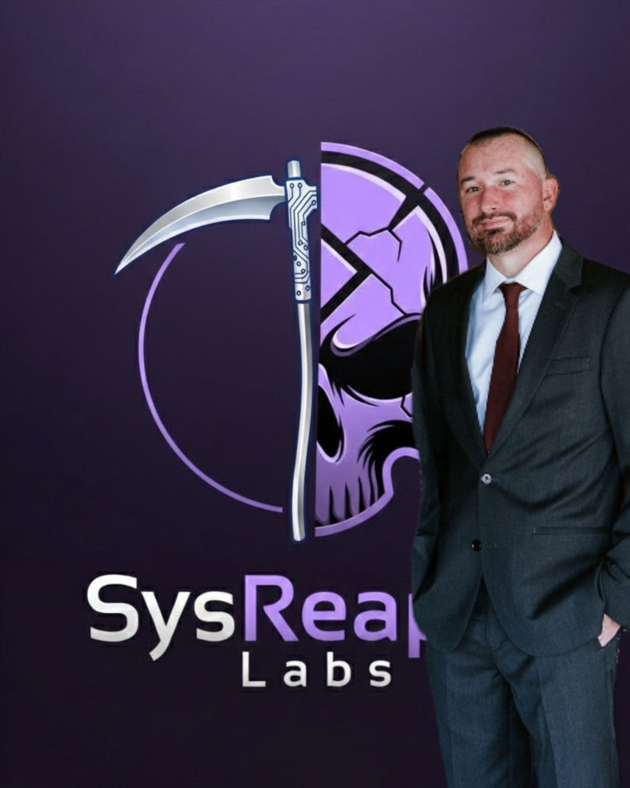
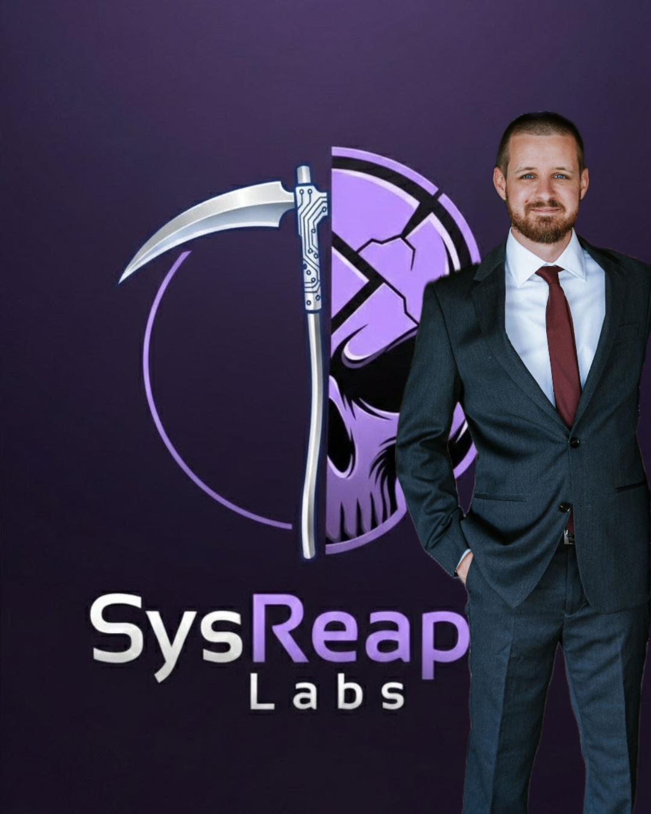

SUBJECT: Wesley Hardy
ROLE: CEO / Lead Security Architect
Veteran Signal Corps professional with a foundation in tactical aerospace communications and FAA compliance.
Specializes in dismantling enterprise data silos and hardening infrastructure for global military reconnaissance operations. A "Silo Killer" who bridges the gap between hardware architecture and sustainable government compliance.

SUBJECT: [Partner Name]
ROLE: COO / Systems Operations
[Insert background summary here - e.g., Senior Operations expert with extensive experience in scaling technical teams and streamlining mission-critical workflows.]
Focuses on the operational execution of security frameworks and ensuring organizational stability in high-growth, high-compliance environments.